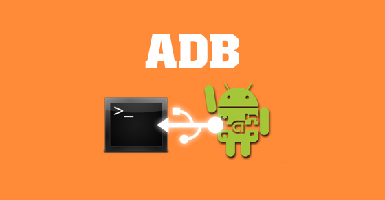

The first step to become an android developer!
-
Android Debug Bridge (ADB)
Android Debug Bridge (ADB) is a versatile command-line tool that allows communication between a computer and an Android device. It is part of the Android SDK and is commonly used by developers and advanced users. With ADB, you can install and debug apps, access the device’s file system, run shell commands, and transfer data between the device and the computer. It is especially useful for testing, troubleshooting, and managing Android devices via USB or over a network connection.
Learn more now!
 -
Fastboot/bootloader mode
Fastboot is a protocol and tool used to update the flash filesystem on Android devices from a computer over a USB connection. It is typically used for low-level operations such as unlocking the bootloader, flashing custom recoveries, and installing firmware updates. Fastboot mode is a special boot mode that allows the device to communicate with the computer using the Fastboot protocol. It is often used by developers and advanced users for tasks that require direct access to the device's hardware and firmware.
-
Custom Recovery
A custom recovery is a modified version of the stock recovery environment on Android devices. It provides additional features and functionalities that are not available in the default recovery mode. Custom recoveries, such as TWRP (Team Win Recovery Project) and OrangeFox Recovery, allow users to perform advanced tasks like installing custom ROMs, creating and restoring backups, wiping specific partitions, and flashing ZIP files. They are commonly used by enthusiasts and developers to customize and enhance their Android experience beyond the limitations of the stock recovery.
Learn more now!